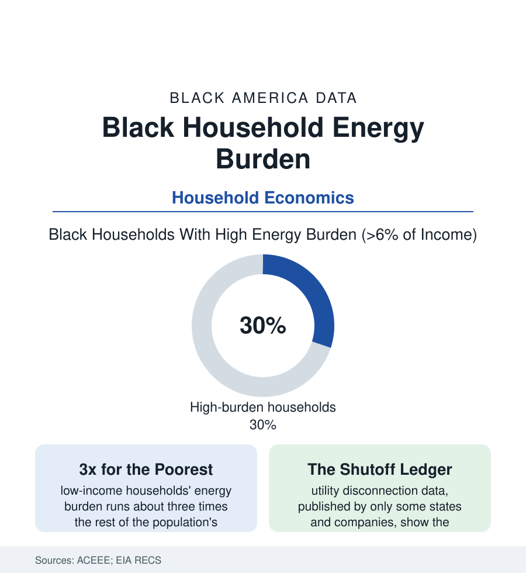

Black Census
The Energy Burden: Black Households Pay More of Their Income to Keep the Lights On
Black households carry an energy burden roughly 40-60% higher than the national median in the ACEEE analyses — paying more, per dollar of income, for the same warmth and light. The household data.

Every household in this census section buys the same two invisible goods — warmth and light — at prices the Energy Department's data show are anything but equal: the energy burden, the share of income a household spends on electricity and fuel, runs for Black households roughly forty to sixty percent above the national median in the ACEEE's metropolitan analyses, with about three in ten Black households carrying a high burden above six percent of income and the low-income Black household at the top of the national stack. This article reads the utility bill as a census document.
The Arithmetic: Rate, Roof, and Income
The burden is a fraction, and all three of its parts carry the file: the numerator's rate side (the same tariff for everyone in the territory — formally equal, substantively nothing of the kind), the numerator's usage side (the housing stock the housing file built: the older, leakier, worse-insulated units of the redlined map in the EIA's Residential Energy Consumption Survey — Black households in homes with measurably worse thermal shells in the RECS tables, heating and cooling the outdoors through single panes in the Gulf summer and the Midwest winter alike, the appliance stock older and thirstier down the same gradient), and the denominator (the income file — a median twenty-some thousand dollars lower converting the same bill into a third more burden before a single inefficiency is counted). The geography compounds in both directions of the thermometer: the Southern Black Belt's cooling loads (the heat file's rising degree-days against the manufactured-housing stock's thin walls — the manufactured-home energy data the worst in the RECS), and the Northern industrial cities' heating season (the Great Migration's destination housing at a century old, the gas bill's winter spike in the shutoff data's own seasonality). The rural cooperative territories add their chapter (the co-op rate structures and the Black Belt's service map — the utilities the New Deal built, their burden data the LEAD tool's county tables print in the same colors as the poverty map they were drawn to erase).
The Enforcement End: Shutoffs, Fees, and the Assistance Queue
Where the burden becomes unpayable, the system's machinery engages — and its data are the file's most contested: disconnection statistics (published systematically by only a minority of states and utilities — the transparency gap itself a finding of the NAACP's and the academic centers' reports — where published, showing shutoff rates in majority-Black ZIP codes at multiples of the territory's average in the city-level analyses), the fee cascade (the late, reconnect, and deposit charges that price the return of service deepest for the household least able to pay — the arrearage data's compounding), and the assistance system's scale against the need (LIHEAP, the federal energy-assistance program, reaching roughly one eligible household in five or six in the program's own reporting, its benefits and crisis funds rationed by state queues that close mid-winter in the program-year data — the queue as the policy). The health file's instruments register the endpoints: the utility-insecurity items in the survey data (the household keeping the home at unsafe temperatures, the forgoing-medicine-to-pay-the-bill trade-offs the researchers document at the burden's height, the space-heater fire and carbon-monoxide rows of the winter mortality data, the heat-wave deaths in the uncooled unit of the health section's heat file). The bill, in this data, is a medical and mortal document filed monthly.
The Fix Ledger: Weatherization and the Efficiency Gap
The remedy's economics are the file's most frustrating table: the efficiency investment that would cut the burden returns its cost fastest exactly where the burden is highest (the weatherization evaluations — the federal Weatherization Assistance Program's measured savings and health returns, the retrofitted home's burden falling by whole points of income) — and reaches that housing slowest (the WAP queue's years-long waits in the state data, the deferral scandal inside the program's own audits: the worst housing turned away as too deteriorated to weatherize, the roof and wiring repairs that must come first unfunded by the program that needs them), the landlord-tenant split incentive in the rental file (the owner who would pay for insulation never sees the bill; the tenant who sees the bill cannot touch the walls — the rental stock's efficiency floor in the RECS data), and the new-money era's design fights (the Justice40 framework's targeting of the burden map, the utility efficiency programs' equity metrics in the states that publish them — participation rates in the rebate programs running inverse to the burden in the program evaluations, the rebate claimed at the new-build suburb for the heat pump while the burden map's own blocks wait for the queue). The data's conclusion is bookkeeping, not mystery: the burden is a measured quantity with a measured cure at a measured price, and the ledger of who has received the cure reads like every other ledger in this section.
Reading the Energy Data
The lights are on in the same houses, at the same tariff, for a third again as much of the family's income — and in three households in ten, at a level the Energy Department itself defines as unaffordable. The energy burden is the census section's quietest tax: assessed by the roof's condition and the map's history, collected monthly, enforced by shutoff. The ACEEE tables print it city by city. It is as readable as any number in this atlas, and as answerable.
More in Black Census
The Black Population of the United States: Size, Definitions, and Distribution
The Black population of the United States totals 52.8 million — 15.4 percent of the nation. How the Census Bureau defines and counts the population, and where it lives.
Black Median Household Income in the United States
Black median household income stands at $56,490 in the Census Bureau's annual income report — how the figure is measured, how it compares, and what drives it.
The Black Poverty Rate: Levels, Children, and the Long Trend
The official Black poverty rate is 17.1 percent — against 11.1 percent nationally and 7.7 percent for non-Hispanic White Americans. How poverty is measured and what the data show.
Source: American Council for an Energy-Efficient Economy (ACEEE) energy burden research; U.S. Energy Information Administration RECS; U.S. Department of Energy LEAD Tool; Lawrence Berkeley National Laboratory.